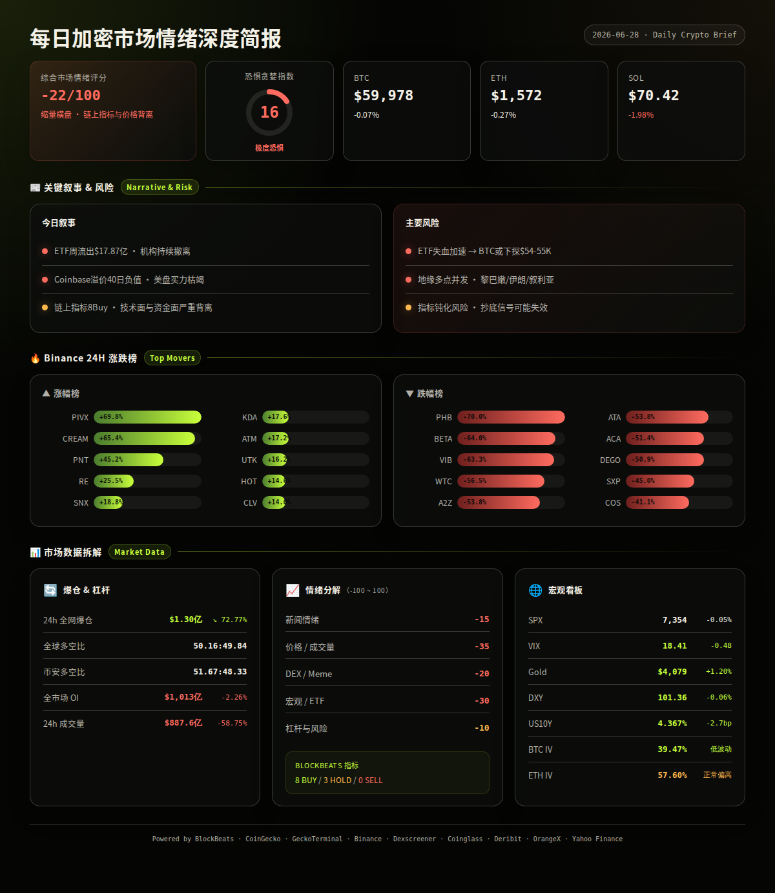
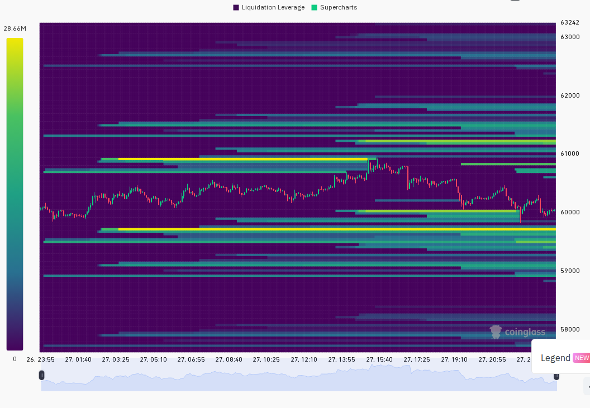
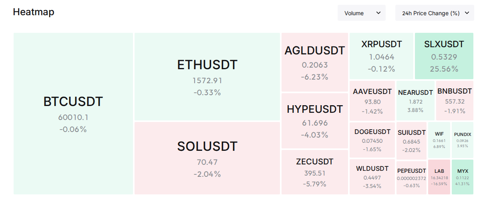

极端恐惧蔓延但链上指标集体看多：加密市场进入"情绪与数据背离"关键窗口
━━━━━━━━━━━━━━━━━━━━━━
⏰ 1. 24小时变化:
恐惧与贪婪指数 16 Extreme Fear
BTC $59,978 -0.07%
ETH $1,572 -0.27%
SOL $70.42 -1.98%
VIX 18.41 -2.54% Normal
成交量 $887.6亿 -58.75%
DXY 101.36 -0.06%
爆仓 $1.30亿 -72.77%
━━━━━━━━━━━━━━━━━━━━━━
本周市场核心矛盾：ETF资金持续大规模流出 vs 链上指标显示底部区域。BTC现货ETF本周净流出$17.87亿，Coinbase溢价连续40天负值，但多个底部指标同步触发。
—— BTC / ETH / SOL ——
宏观资金面极度疲弱，但技术面出现底部信号。BTC在$59,500-$60,500区间极度缩量横盘，ETH勉强守住$1,570，SOL回落至$70附近。
信息 1：美国BTC现货ETF本周净流出$17.87亿，昨日单日净流出$4.445亿；ETH现货ETF昨日净流出$1,280万。机构资金连续加速撤离。（BlockBeats）
信息 2：Coinbase比特币溢价指数已连续40天处于负溢价状态，反映美国市场买盘持续乏力。（BlockBeats）
信息 3：Polymarket预测BTC年内跌至$50,000概率已升至63%，但需要注意的是该平台同期遭遇第三方漏洞攻击损失约$300万，市场参与者情绪可能受事件扰动。（BlockBeats）
信息 4：CZ公开表态：本轮加密市场下跌由资金流向AI、地缘政治紧张及四年周期因素共同驱动。（BlockBeats）
信息 5：Strategy（原MicroStrategy）mNAV跌破1.0，即公司市值已低于其BTC持仓市值，为极端悲观定价信号。（BlockBeats）
信息 6：Base网络发生中断事件，根因指向区块构建器逻辑漏洞，用户资金安全受到威胁。Base B20代币标准主网激活再度延迟。（BlockBeats）
—— 宏观 / 地缘政治 ——
传统市场AI芯片股遭遇抛售，地缘风险多点并发，欧洲央行暗示继续加息，风险资产环境整体不友好。
信息 7：彭博报道：芯片股抛售拖累本周美股，AI估值担忧压制市场表现。但另一方面，SpaceX将于7月7日纳入纳斯达克100指数，有望带来$43亿被动资金流入。（BlockBeats, Bloomberg）
信息 8：美国ETF年内流入已突破$1万亿，全年有望突破$2万亿创纪录。需要注意该数据包含了传统和非加密ETF。（BlockBeats）
信息 9：美联储7月加息25bp概率目前为29.9%。欧洲央行执委暗示将进一步加息。（BlockBeats）
信息 10：以色列-黎巴嫩三方框架协议生效仅一天后，以色列再度对黎巴嫩进行5次轰炸。美军在叙利亚打击伊朗支持的民兵武装。（BlockBeats, X List）
信息 11：美国-伊朗再次发生小规模冲突。同时特朗普政府与Anthropic达成协议，允许Mythos 5模型部署至约100家企业及联邦机构。（BlockBeats）
—— AI / 半导体叙事 ——
AI估值争议加剧，芯片股抛售向加密市场传导了risk-off情绪，但AI基础设施建设并未停下。
信息 12：OpenAI发布GPT-5.6预览版，目前仅向可信Codex及API合作伙伴开放。GPT-5.6命名引发加密社区Solana戏谑回应："Sam Altcoinman"。（BlockBeats）
信息 13：Anthropic Mythos 5获批重新部署至美国机构，Claude Fable 5公开版本即将恢复。美国政府或已收紧AI模型发布管控。（BlockBeats）
信息 14：中国知名对冲基金经理警告全球AI股票已成"超级泡沫"。Citrini分析师认为AI投资过于拥挤，建议关注5个关键机会领域。（BlockBeats）
信息 15：AWS上调NVIDIA算力服务价格20%。高通声称将挑战NVIDIA在AI芯片领域的主导地位，预计2029财年数据中心AI组件年销售额超$150亿。（BlockBeats）
—— 值得关注的标的 ——
Binance 涨幅榜 (USDT):
· PIVX: +69.8%
· CREAM: +65.4%
· PNT: +45.2%
· RE: +25.5%
· SNX: +18.8%
· KDA: +17.6%
· ATM: +17.2%
· UTK: +16.2%
· HOT: +14.6%
· CLV: +14.0%
跌幅榜:
· PHB: -70.0%
· BETA: -64.0%
· VIB: -63.3%
· WTC: -56.5%
· A2Z: -53.8%
· ATA: -53.8%
· ACA: -51.4%
· DEGO: -50.9%
· SXP: -45.0%
· COS: -41.1%
跌幅榜出现多只跌幅超过50%的代币，包括PHB -70%、BETA -64%、VIB -63.3%，可能涉及退市或项目终止事件。暴涨榜中PIVX +69.8%、CREAM +65.4%为异常拉升，低流动性特征明显。（Binance, analysis）
—— 融资 / VC ——
信息 16：Framework Ventures完成第四支基金$4亿募资，重点投向区块链、AI、机器人等前沿技术领域。（BlockBeats）
信息 17：AI驱动的Web3基础设施层Canopy完成$850万种子轮融资，Arrington Capital参投。（BlockBeats）
信息 18：Metal完成种子轮融资，由Airwallex和Capital49联合领投。Ornn完成$3,300万种子轮融资，a16z Crypto领投。（BlockBeats）
信息 19：区块链数据基础设施Cambrian完成$600万融资，Franklin Templeton和Polychain Capital领投。（BlockBeats）
—— X/Twitter KOL 信号 ——
信息 20：过去24h从Tin的3个精选List抓取526条推文，3/3 list成功。58%内容为未分类/生活噪音，加密相关讨论集中在CRYPTO市场（18%）、AI/Agent（10%）、股票/传统市场（3%）、DeFi（2%）、Builder/项目进展（2%）、地缘政治（2%）。（X Lists, analysis）
信息 21：代币提及极度稀疏——$SLX和$HYPE各2次/2人提及，其余代币皆为单一作者提及1次。没有任何代币出现3人以上的共振讨论，说明当前市场叙事极其分散，无明确主线。（X Lists, analysis）
信息 22：高互动推文以生活/搞笑内容为主（@Whotfismick 7.1万赞天气梗、@DexSkulldog 2.3万赞披萨梗、@crucifiedfujo 2万赞段子），说明当前社交媒体的加密关注度处于冰点——市场参与者在熊市中更多消费娱乐内容而非分析行情。（X Lists, analysis）
信息 23：$SLX出现多人偏多讨论，适合作为交叉验证对象。AI/Agent叙事（69条）虽不是纯币种信号，但持续多日保持高占比，说明AI与加密的交叉叙事正在缓慢形成可跟踪的市场主题。（X Lists, analysis）
━━━━━━━━━━━━━━━━━━━━━━
风险 1：ETF持续失血引发BTC加速下跌
过去一周BTC现货ETF净流出$17.87亿，为近期最大规模单周流出。如该趋势延续，BTC可能失守$58,000支撑位。
观察: 下周ETF日度资金流向数据，尤其关注周一开盘方向。
失效条件: 若ETF出现连续两日净流入，且单日流入规模>$2亿，则此风险大幅下降。（BlockBeats, analysis）
──────────────────────
风险 2：Coinbase长期负溢价暗示美盘结构性出走
Coinbase BTC溢价连续40日负值，为历次牛市以来最长持续记录。这意味着美国机构/散户在持续减持或做空。
观察: Coinbase溢价指数是否回到正值区间，这是判断美盘买盘回归的最直接指标。
失效条件: 溢价连续3日回到+0.05%以上，说明美盘买盘重新入场。（BlockBeats, analysis）
──────────────────────
风险 3：链上指标与市场价格的背离可能以"下跌确认"收场
BlockBeats 11项指标中8项Buy、3项Hold，但价格并未反弹。类似背离在2022年11月出现过——指标"抄底"后BTC仍下跌了15%才见真底。
观察: 未来72小时内BTC价格是否能在$58,000以上获得支撑并放量反弹。
失效条件: BTC放量突破$62,000则确认背离向上修复。若跌破$58,000则背离以价格补跌收场。（BlockBeats, analysis）
──────────────────────
风险 4：地缘冲突升级引发恐慌性抛售
以色列-黎巴嫩协议一天即破裂、美军打击叙利亚伊朗民兵、美国-伊朗小规模冲突多点并发。中东局势若快速升温，风险资产将普遍承压。
观察: 美军中央司令部声明、以色列-黎巴嫩是否进一步交火、布伦特原油是否突破$80。
失效条件: 三方协议重新生效或联合国介入实现停火。（BlockBeats, X List, analysis）
──────────────────────
风险 5：Base网络事件对Solana生态的连锁影响
Base网络中断暴露了L2基础设施的脆弱性，但Base B20代币标准再次延迟可能反而有利于Solana等竞对链。
观察: Base网络恢复公告及B20标准新时间表。如果恢复期过长，Solana可能获得叙事切换红利。
失效条件: Base在48h内恢复正常且B20标准明确上线日期。（BlockBeats, analysis）
──────────────────────
风险 6：Polymarket/CFTC监管风险向预测市场乃至DeFi板块扩散
CFTC对Polymarket展开调查，多个美国州及消费者组织同步施压。预测市场赛道可能面临更广泛的监管收紧。
观察: CFTC是否发布正式执法公告、Polymarket是否暂停美国用户服务。
失效条件: CFTC调查以和解或声明"无进一步行动"结束。（BlockBeats, analysis）
非财务建议声明: 本报告仅提供市场数据和情绪分析，不构成任何买卖建议。
━━━━━━━━━━━━━━━━━━━━━━
· 6月29日（周一） — 美股开盘，关注SPX是否延续上周芯片股抛售 — 若SPX低开将连带拖累BTC（analysis）
· 6月30日 — BTC季度期权到期日，名义价值约$45亿 — Deribit显示BTC ATM IV 39.47%处于低位，到期后IV可能进一步下行（Deribit, analysis）
· 7月1日 — 美国ISM制造业PMI — 若低于50枯荣线将强化衰退叙事，有利于降息预期但对风险资产短期偏空（analysis）
· 7月2日 — SpaceX纳入Nasdaq-100指数生效日 — 预计带来$43亿被动资金流入，提振AI/科技板块情绪（BlockBeats, analysis）
· 7月3日 — 美联储FOMC会议纪要公布 — 关注加息/降息措辞变化，当前7月加息概率29.9%（BlockBeats, analysis）
━━━━━━━━━━━━━━━━━━━━━━
综合评分: -22/100 (恐惧情绪主导 · 缩量横盘 · 链上指标与价格背离)
5 个维度:
新闻情绪: -15/100 — ETF连续大幅流出、Coinbase负溢价记录、Base网络中断、地缘冲突升级组成偏空信息流。但BlockBeats 11项综合指标8Buy/3Hold发出底部信号，Framework Ventures $4亿新基金展示机构仍看好长期。（BlockBeats, analysis）
价格/成交量: -35/100 — BTC、ETH、SOL全面温和下跌，24h全网成交量断崖式萎缩58.75%至$887.6亿。缩量横盘通常意味着市场方向选择在即。（CoinGecko, CoinGlass, analysis）
DEX/meme 活跃度: -20/100 — Solana DEX仍有局部热度（ANSEM 24h成交量$11.2M、CARDS $4.1M），但新增池无一满足$50k流动性+$100k成交量门槛，链上新币动能枯竭。（GeckoTerminal, analysis）
宏观/ETF/流动性: -30/100 — 黄金+1.2%（避险需求上升），SPX近5日-1.59%，BTC ETF周流出$17.87亿，US10Y收益率4.367%仍处高位。宏观环境对风险资产整体不利。（Yahoo Finance, BlockBeats, analysis）
杠杆与风险: -10/100 — 24h爆仓仅$1.30亿（环比-72.77%），OI小幅下降2.26%，说明市场已完成一轮去杠杆。ETH资金费率转负（Binance -0.0052%），空头开始主导。BTC资金费率仍为正但极低（+0.0043%）。去杠杆完成往往是底部先行信号。（CoinGlass, CoinGecko derivatives, analysis）
BlockBeats Bottom/Top Indicator:
· 市场脉动指数: Buy（8项Buy / 3项Hold / 0项Sell）
· 整体市场流动性: Buy · BTC流动性: Buy · ETH流动性: Buy
· 24h累积BTC流动性: Buy · 合约多空比偏离: Hold
· 山寨币抗跌: Hold · Bitfinex溢价: Hold
· USDC/USDT溢价: Buy · Binance USDT借贷利率: Buy · 资金费率加权: Buy


以下为基于多源数据交叉验证的概率情景分析：
情景 1 (概率: 40%, 置信度: 中):
底部区域的反复试探 — BTC在$58,000-$62,000区间继续缩量横盘1-2周，等待宏观催化剂（美联储纪要、ETF资金流转向）。期间山寨币继续分化，强势项目（AI/Agent相关、Solana生态）相对抗跌。
关键条件: ETF日流出< $1亿，BTC不破$58,000，VIX < 22。
若发生则BTC $58,000-$62,000区间震荡，SOL $65-$75，ETH $1,500-$1,650。（multi-source, analysis）
情景 2 (概率: 35%, 置信度: 中):
恐慌性下杀后V型反弹 — ETF流出加速或地缘事件触发BTC跌破$58,000，引发$5亿+级联爆仓，快速插针至$54,000-$55,000后出现强力反弹。BlockBeats指标Buy信号越多，说明越接近底部。
关键条件: BTC跌破$58,000后24h爆仓>$5亿，Coinbase溢价突然转正。
若发生则BTC插针至$54,000-$56,000后反弹至$60,000+，形成长下影线周线。（CoinGlass, BlockBeats, analysis）
情景 3 (概率: 25%, 置信度: 低):
情绪修复与叙事切换 — 下周SpaceX纳入Nasdaq-100带动AI板块反弹，加密市场借由AI/Agent叙事回暖。ETF流出放缓，Coinbase溢价转正。
关键条件: SPX止跌回升，OpenAI GPT-5.6公测引发AI代币轮动，BTC ETF出现>$3亿单日净流入。
若发生则BTC反弹至$64,000-$66,000，SOL领涨山寨回到$80+，AI概念代币（TAO、NEAR、DEUS等）表现优于大盘。（BlockBeats, X Lists, analysis）
━━━━━━━━━━━━━━━━━━━━━━
· BTC: $59,978, 24h -0.07%, 成交量$160.5亿, 高低区间$59,783-$60,170。极度缩量，波动率压缩至近期低点，方向选择在即。（CoinGecko）
· ETH: $1,572, 24h -0.27%, 成交量$60.2亿, 高低区间$1,569-$1,603。表现略弱于BTC，BTC Dominance升至55.82%显示资金从山寨回流BTC。（CoinGecko）
· SOL: $70.42, 24h -1.98%, 成交量$18.4亿, 高低区间$70.21-$71.84。在BTC/ETH/SOL三者中跌幅最大，回吐昨日+9%涨幅的大部分。（CoinGecko）
· 全球总市值: $2.15万亿, 24h -0.31% (CoinGecko)
· 爆仓数据: 24h全网爆仓$1.30亿, 环比-72.77%。全球多空比50.16%:49.84%接近平衡，Binance TV多空比51.67%:48.33%略偏多。爆仓极度萎缩意味着高杠杆仓位已基本出清。（CoinGlass）
· OI 与成交量: 全网OI $1,012.7亿, 环比-2.26%。Binance合约OI $174.7亿, Bybit $86.4亿, Hyperliquid $60.6亿。三大平台OI均在下降。BTC OI: Binance $61.8亿 (funding +0.0043%), Bybit $34.4亿 (funding -0.0034%)。ETH OI: Binance $36.2亿 (funding -0.0052%), 资金费率转负为空头主导信号。（CoinGlass, BlockBeats, CoinGecko derivatives）
· 宏观看板: SPX 7,354 (-0.05%), 5日-1.59% | VIX 18.41 (Normal) | DXY 101.36 (-0.06%, 7日+0.60%) | US10Y 4.367% (24h -2.7bp, 7日-15.1bp) | Gold $4,078.70 (24h +1.20%, 5日-2.47%)。黄金上涨而BTC横盘，短期BTC与黄金呈弱负相关。US10Y小幅下行但仍在4.3%以上高位。（Yahoo Finance, BlockBeats）
· 期权波动率: BTC ATM IV 39.47%（低波动区域），ETH ATM IV 57.60%（正常偏高），ETH-BTC IV利差18.13%（>15%表明山寨溢价仍在，即期权市场仍在为ETH相对于BTC的更高波动定价）。BTC季度期权6月30日到期，名义价值约$45亿，到期后IV大概率进一步压缩。（Deribit）
以下基于CoinGecko trending + DEX 数据交叉验证：
VELVET (Ethereum):
$1.57, 24h +132.2%, 市值约$16亿（第89位）。
DEX: 主流DEX流动性充足但部分已随价格上涨被抽走。
催化剂: 未明确单点催化剂，属于Trending驱动型的关注度拉升。CG Trending排名第2。
风险: 单日涨幅过大（>100%），获利盘随时可能砸盘。无明确基本面催化剂支撑持续上涨。（CoinGecko, analysis）
DEUS/XMAQUINA (Multi-chain):
$0.032, 24h +32.6%, 市值排名901。
DEX: 流动性分散在多个链上，单个池流动性通常<$100k。
催化剂: AI+Agent叙事持续发酵，低市值代币在AI热点中获得投机资金关注。CG Trending排名第1。
风险: 市值极小，流动性差，大额买卖滑点极高。非AI赛道的核心标的。（CoinGecko, analysis）
CARDS/Collector Crypt (Solana):
$0.241, 24h -4.8%, 市值排名370。
DEX (CARDS/USDC on Raydium): 流动性$355万, 24h成交量$414万, 买卖比约52:48。
催化剂: CG Trending排名第11，GeckoTerminal Solana 24h成交量前10池中流动性最好的一员。在低迷市场中维持>$300万流动性表明社区较稳固。
风险: 24h价格下跌4.8%，DEX成交量占比高说明仍在活跃换手但方向偏空。（CoinGecko, GeckoTerminal, analysis）
ANSEM (Solana):
DEX (ANSEM/SOL on Raydium): 流动性$32.5万 (pool 1) + $10.4万 (pool 2), 合并24h成交量$1,123万, pool 1涨幅+4692%。
催化剂: Solana链上的极端meme币行情，可能是单地址拉盘或KOL喊单驱动的短时爆发。
风险: 流动性极低（<$33万），24h涨幅4692%后随时可能归零。极高风险，不可追高。（GeckoTerminal, analysis）
TRADER (Solana):
DEX (TRADER/SOL on Raydium): 24h成交量$1,243万, 流动性仅$9,462。
催化剂: 超低流动性+超高交易量的典型"pump and dump"特征。
风险: 流动性$9,462意味着任何>$1,000的卖出就会造成严重滑点。极高风险。（GeckoTerminal, analysis）
━━━━━━━━━━━━━━━━━━━━━━
· GeckoTerminal Solana trending pools (24h 成交量 > $1M):
1. TRADER/SOL: 成交量$1,243万, -81.4%, 流动性$9,462 (极高风险) (GeckoTerminal)
2. ANSEM/SOL (pool 1): 成交量$847万, +4692%, 流动性$325k (GeckoTerminal)
3. CARDS/USDC: 成交量$414万, -4.0%, 流动性$355万 (GeckoTerminal)
4. ANSEM/SOL (pool 2): 成交量$276万, +158%, 流动性$104k (GeckoTerminal)
5. XGIFT/SOL: 成交量$240万, -99.1%, 流动性$5,054 (GeckoTerminal)
6. world/SOL: 成交量$242万, -72.5%, 流动性$111k (GeckoTerminal)
7. world/USDC: 成交量$244万, +1075.7%, 流动性$67k (GeckoTerminal)
8. Jotchua/SOL: 成交量$177万, +2.5%, 流动性$489k (GeckoTerminal)
9. RTM/SOL: 成交量$148万, +643.2%, 流动性$128k (GeckoTerminal)
10. FRONT/SOL: 成交量$137万, -89.5%, 流动性$16k (GeckoTerminal)
11. BANANA/SOL: 成交量$129万, +92.4%, 流动性$18k (GeckoTerminal)
12. FISSION/SOL: 成交量$126万, +31.0%, 流动性$15k (GeckoTerminal)
13. CATWIF/USDC: 成交量$111万, +40.6%, 流动性$84k (GeckoTerminal)
· BlockBeats Solana top10_netflow:
1. JLP · 2. ONYC · 3. PUMP · 4. SYRUPUSDC · 5. SPCX · 6. MET · 7. TRUMP · 8. CRCLX · 9. KLED · 10. NEST (BlockBeats)
· 备注:
Solana链上trending pools仍以极低流动性的meme币为主——13个>$1M成交量池中，仅CARDS/USDC（$355万流动性）具备基本的交易安全边际。其余12个池的流动性均<$50万，其中6个<$5万，进入和退出都面临极大滑点风险。当前链上meme市场处于"高换手、低留存"的投机尾段，不适宜大资金参与。
CoinGecko板块层面：DeFAI（+51.4%）、Believe.app Ecosystem（+63.7%）连续多日出现在涨幅榜前列，AI+DeFi的交叉叙事正在形成细分赛道。与此形成对比的是，Tower Defense Games（-84.1%）、ERC 404（-42.0%）等游戏/NFT相关板块持续萎缩——市场在极度低迷时呈现明显的"板块分化"，资金向AI和DeFi两个方向集中。